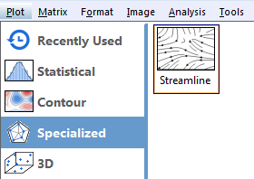

Streamline-Vector-Plot
Matrix: Eine Matrix von Z-Werten
Wählen Sie die gewünschten Daten aus.
Wählen Sie Zeichnen: Spezialisiert: Feldliniendiagramm.

Streamline.otpu (installiert im Origin-Programmordner)